Courses › Human Physiology › Module 3
Human Physiology · 6131
Module 3 — The Cardiovascular System
Topics: 3.1 Introduction to the Cardiovascular System (4 lectures) • 3.2 Common Cardiovascular Conditions • 3.3 The Aging Cardiovascular System
📖 How to Use These Notes
- Best used with the lecture playing — keep these open, follow along, and add your own notes as you watch
- Lecture banners mark the start of each topic and run in the same order as the videos
- 🎙 Callouts = direct insights from the instructor's transcript
- ★ Tips = exam-relevant content or things the instructor told you to prepare
- Figures are taken directly from the module's slide decks
- Each topic ends with its own Quick-Reference Glossary
- Written from last year's recordings — if a lecture has been re-recorded or resequenced, Canvas wins
- Watch this module's lecture videos (Dr. K) in your own Canvas module — video links are cohort-specific
- Assessments: Cardiovascular Individual Quiz → Team Quiz (Zoom + webcam); sync session runs a team quiz + 5 case studies
- Dr. K teaches Cardiopulm, Pharm, and Complex Patients later — everything here is the foundation she will build on
TOPIC 3.1
Introduction to the Cardiovascular System
1. Components and the Path of Blood
- Three components: the heart (central pump), the vessels (network), and the blood (the transport medium for oxygen, nutrients, hormones, and waste). The system also regulates temperature, pH, and fluid balance, and protects through immune responses and clotting.
🫀 The blood-flow sequence — memorize it cold
- Vena cava → right atrium → tricuspid valve → right ventricle → pulmonary valve → pulmonary artery → lungs
- Lungs → pulmonary vein → left atrium → mitral valve → left ventricle → aortic valve → aorta → body
- Valve disorders and CHF are diseases of this path — that's why PTs need it automatic
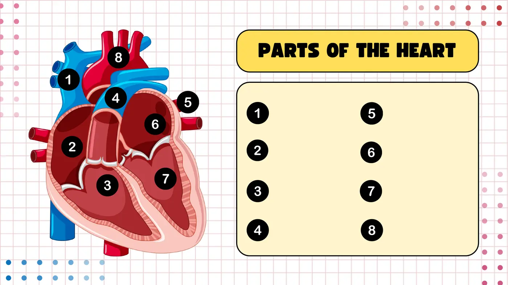
2. The Cardiac Cycle, Heart Sounds, and Conduction
- Course convention: systole and diastole always refer to the VENTRICLES. Diastole = ventricles relax and fill (includes rapid filling + atrial contraction — the atria contract while the ventricles relax); systole = ventricles contract and eject.
| Heart sound | When | What closes |
|---|---|---|
| S1 — “lub” | Start of systole | Mitral + tricuspid (AV valves) |
| S2 — “dub” | End of systole / start of diastole | Aortic + pulmonary (semilunar valves) |
| S3 / S4 | — | Pathological — parked until Cardiopulm |
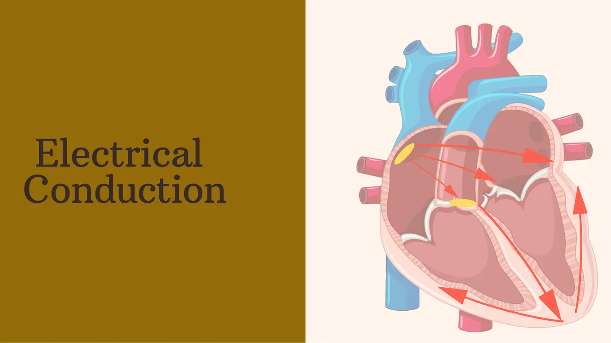
- Conduction: the SA node (right atrium — the natural pacemaker) fires → impulse spreads across the atria → AV node delays the signal so the ventricles can fill → bundle of His → Purkinje fibers → coordinated ventricular contraction.
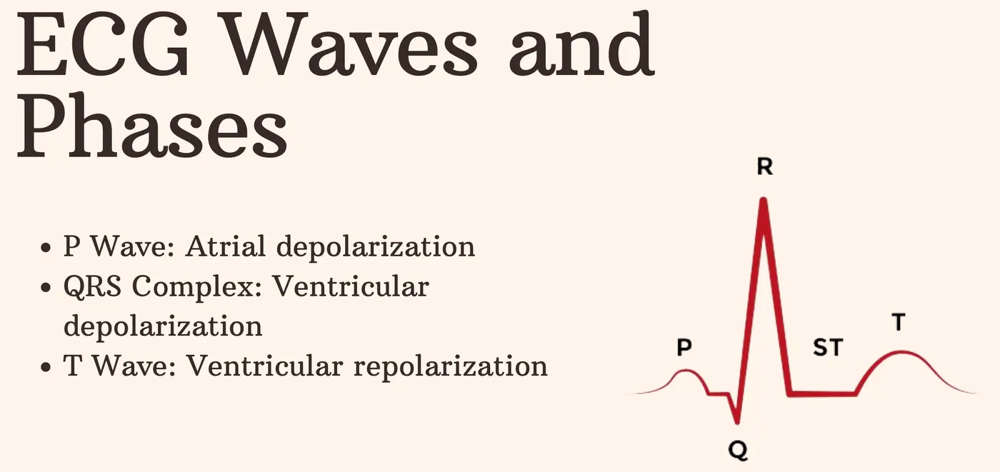
- ECG: P wave = atrial depolarization (atrial systole); QRS = ventricular depolarization (systole); T = ventricular repolarization (recovery). You are NOT being asked to read complex ECGs in this course — just know what the waves mean.
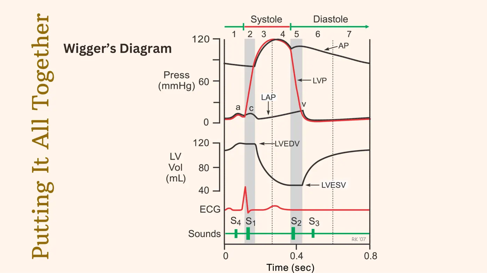
- Wiggers diagram, walked systematically: LV pressure spikes in systole (ejection) and falls in diastole (filling); LV volume does the opposite — pressure and volume are inversely related. Max volume = LVEDV, minimum = LVESV, and stroke volume = EDV − ESV. The ECG events fire BEFORE the mechanical changes — electrical causes mechanical. S1 sits at the start of systole, S2 at the start of diastole.
3. Hemodynamics: Blood Pressure and Its Four Regulators
- Blood pressure = force of circulating blood on vessel walls: systolic (peak, during contraction) over diastolic (minimum, between contractions).
| Regulator | Sensor / trigger | Response |
|---|---|---|
| Baroreceptors | Carotid sinus + aortic arch — vessel-wall stretch | ↑BP → parasympathetic (↓HR, vasodilation); ↓BP → sympathetic (↑HR, vasoconstriction). The rapid responder |
| Chemoreceptors | Carotid + aortic bodies — blood O₂, CO₂, pH | Low O₂ / high CO₂ / low pH → ↑respiratory rate + sympathetic drive → ↑HR and BP |
| RAAS | Kidneys sense ↓BP → release renin | → angiotensin II (vasoconstriction + aldosterone release) → aldosterone → Na⁺ + water retention → ↑BP |
| Autonomic NS | Central control | Sympathetic ↑HR + vasoconstriction; parasympathetic ↓HR + vasodilation |
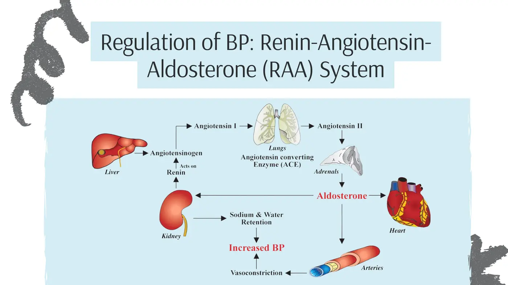
4. Vessels and the Two Circulations
| Vessel | Structure | Function |
|---|---|---|
| Arteries | Thickest walls — withstand pump pressure | Carry blood AWAY from the heart (oxygenated — except pulmonary arteries) |
| Arterioles | Muscular regulators | Control flow into capillary beds |
| Capillaries | Thinnest walls — one cell | Gas, nutrient, and waste exchange |
| Venules | Thin collectors | Gather blood from capillaries |
| Veins | Less muscular, low pressure, one-way valves | Return blood to the heart (deoxygenated — except pulmonary veins) |
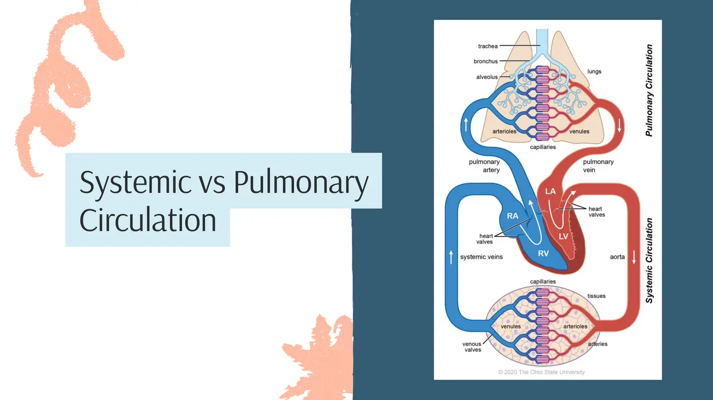
| Systemic circulation | Pulmonary circulation |
|---|---|
| LV → aorta → body → RA | RV → pulmonary arteries → lungs → pulmonary veins → LA |
| Delivers oxygen + nutrients, removes waste | CO₂ traded for O₂ — the gas-exchange loop (more next module) |
5. Cardiovascular Response to Exercise
- Two headline adaptations: blood flow shifts to active muscle, and peripheral vasodilation in the working muscle lets it through. HR rises linearly with intensity (sympathetic on, parasympathetic off) until HRmax; SV rises (venous return + contractility) then plateaus; CO = HR × SV reaches 20–30 L/min in intense exercise.
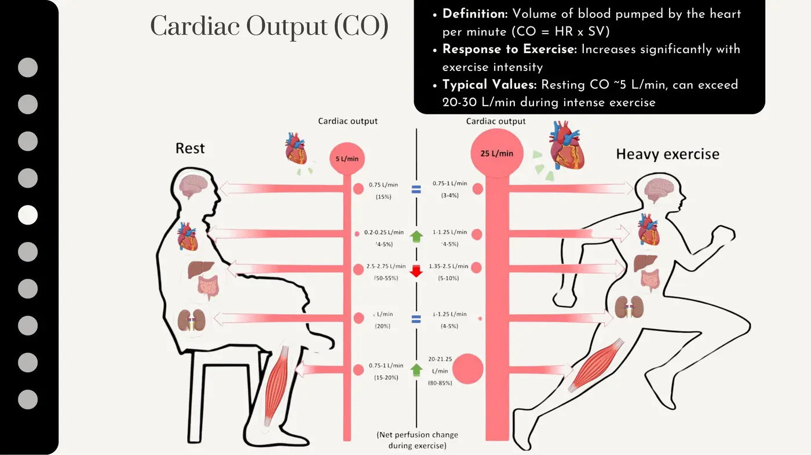
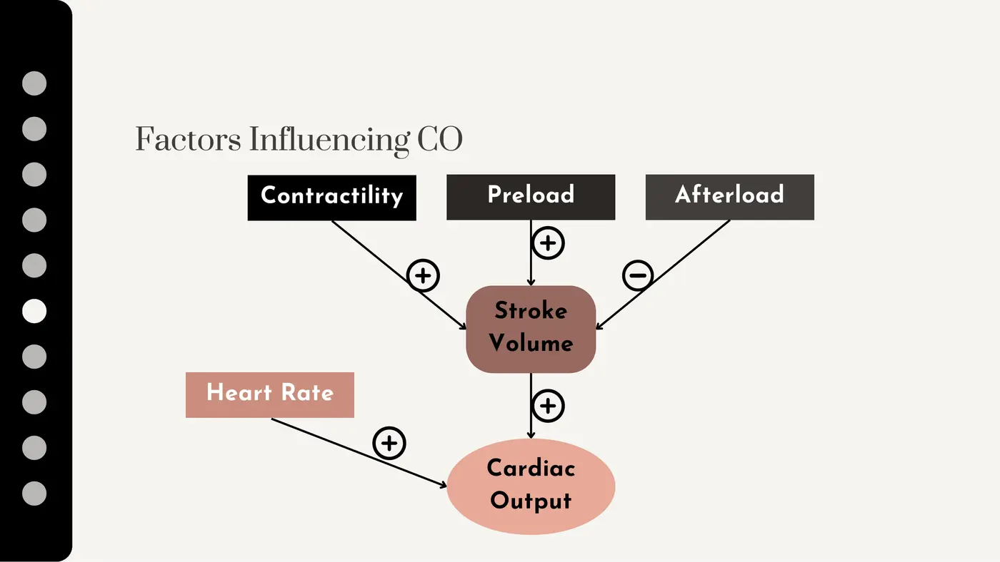
| Factor | Mechanism → effect on CO |
|---|---|
| Contractility | Stronger contraction → more complete ejection → ↑SV → ↑CO |
| Preload | ↑venous return stretches the ventricle → Frank-Starling law → stronger contraction → ↑SV → ↑CO |
| Afterload | ↓resistance downstream → easier ejection → ↑SV → ↑CO |
| Heart rate | ↑cycles/min → ↑CO — until it's too fast: diastolic filling time shrinks, SV falls, CO can drop. Balance matters |
- Endurance-training effects — at the heart: ↑SV (contractility + venous return), ↓resting HR (more parasympathetic tone), more efficient function. At the muscle: capillary growth (better gas/nutrient exchange), better redistribution via vasodilation.
- The PT loop Dr. K wants you to internalize: assess capacity (exercise/field tests, 1RM, physical-activity measures) → prescribe individually → adjust within/between sessions (RPE, dyspnea scales, talk test, HR) → reassess → progress workload so RPE stays constant as the patient adapts. That loop IS the job, in every setting.
Topic 3.1 — Quick-Reference Glossary
| Term | Definition |
|---|---|
| Systole / diastole | Ventricular contraction-ejection / relaxation-filling (course convention: ventricles) |
| S1 / S2 | AV-valve closure at systole's start / semilunar closure at its end |
| SA → AV → His → Purkinje | The conduction chain; AV node delays for filling |
| P / QRS / T | Atrial depolarization / ventricular depolarization / repolarization |
| LVEDV − LVESV | = stroke volume, straight off the Wiggers diagram |
| Baroreceptors vs chemoreceptors | Stretch sensors vs O₂-CO₂-pH sensors |
| RAAS | Renin → angiotensin II → aldosterone → sodium + water retention → ↑BP |
| CO = HR × SV | Up to 20–30 L/min in intense exercise |
| Frank-Starling law | More stretch (preload) → stronger contraction |
| Preload / afterload | Filling load before contraction / resistance after ejection |
TOPIC 3.2
Common Cardiovascular Conditions
1. Atherosclerosis
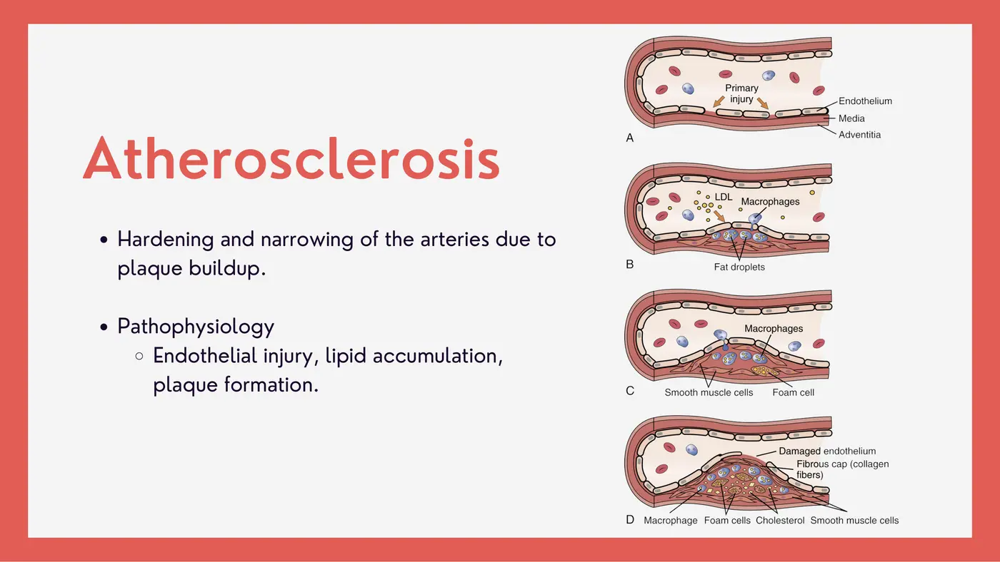
- The cascade: endothelial damage (hypertension, smoking, high cholesterol) → LDL enters the artery wall → macrophages engulf it and become foam cells → fatty streak (the earliest visible sign) → smooth-muscle cells migrate and form the fibrous cap → plaque. The wall thickens, loses elasticity, and the lumen narrows.
| Where | Result | Presentation |
|---|---|---|
| Coronary arteries | CAD | Angina, shortness of breath, fatigue; ↑MI risk |
| Cerebral vessels | Stroke/CVA, TIAs | Limb weakness, speech difficulty, vision changes |
| Aorta | Aneurysm (wall weakening) | Rupture = massive internal bleed; the most-reported survivor symptom is a sudden severe headache |
| Peripheral (legs) | PAD | Claudication — painful cramping with activity, relieved by rest; non-healing wounds; necrosis/gangrene → amputation |
- PT role: exercise to support circulation, and risk-factor education — modifiable (diet, smoking, behavior) vs non-modifiable (age, gender, heredity).
2. Hypertension
- Chronic BP elevation; the core mechanism is increased peripheral resistance from narrowed or stiffened vessels (Dr. K's analogy: drinking through a cocktail straw instead of a boba straw). RAAS activation, sympathetic overactivity, and sodium/water retention contribute. Often asymptomatic — progression brings headaches, dizziness, blurred vision, SOB. Diagnosis takes repeated measurements, never one reading.
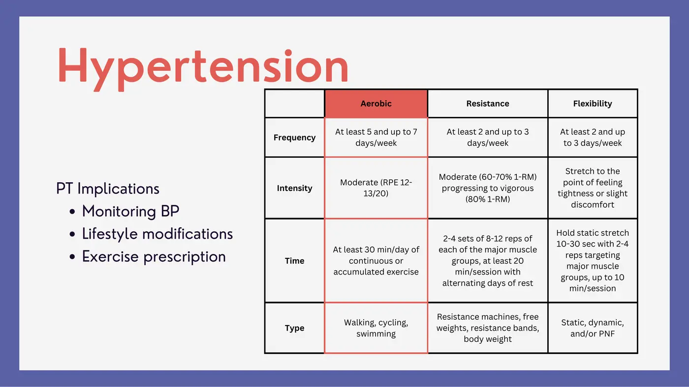
- Why PTs own this: patients see us far more often than their PCP. Best practice = check BP every visit — if diagnosis requires repeated readings, we're the ones positioned to catch it. Then: lifestyle/risk-factor education and ACSM-guided exercise prescription (aerobic emphasized throughout this system).
3. Valve Disorders
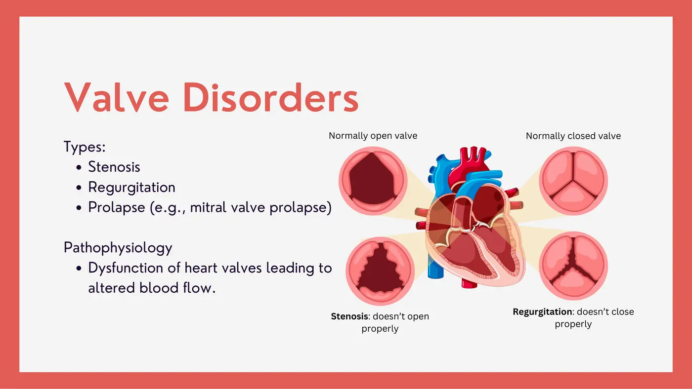
| Type | Problem |
|---|---|
| Stenosis | Valve won't open properly |
| Regurgitation | Valve won't close — blood leaks backward |
| Prolapse (mitral = most common) | Leaflets bulge into the atrium during contraction → can leak; usually milder than true regurgitation. Signature sound: mid-systolic click |
- S&S: murmurs (turbulent flow), fatigue with activity, palpitations, SOB (exertion or lying down), sharp chest pain (MVP leaflet tension), dizziness/syncope (classically aortic stenosis), LE/abdominal swelling, persistent cough or wheeze (severe left-sided disease).
| Valve repair | Valve replacement |
|---|---|
| Preferred when possible — preserves the native valve | Mechanical (titanium/carbon): very durable but lifelong anticoagulation |
| Better long-term outcomes | Biological (pig/cow/human tissue): no long-term anticoagulation, but replaced every 10–20 years |
4. Arrhythmias
- AFib (incredibly common): chaotic atrial signals — the atria quiver instead of contracting → poor ventricular filling; raises stroke and MI risk. VTach (incredibly dangerous): abnormal VENTRICULAR signals — life-threatening; managed with meds, cardioversion, or an ICD. Both present with palpitations, dizziness, syncope, fatigue.
⚠ The PT emergency rule
- At bedside you CANNOT tell AFib from VTach by symptoms alone.
- Symptomatic patient → get the AED. VTach is a shockable rhythm; the AED decides.
- ECG-strip recognition training comes in Cardiopulm — the preparedness mindset starts now.
5. Congestive Heart Failure
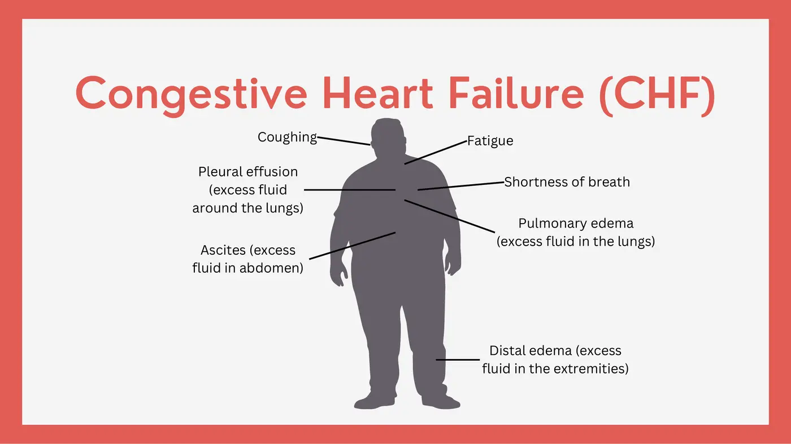
- The heart can't pump effectively → fluid backs up. Pathophys: weakened muscle, reduced ejection fraction, fluid overload. S&S: SOB, chronic cough, fatigue — and the fluid map: pleural effusion = fluid AROUND the lungs; pulmonary edema = fluid WITHIN the lungs (know the difference), plus ascites (abdomen) and distal edema.
- PT: assess exercise tolerance, teach energy conservation, address respiratory limitations, prescribe by the ACSM CHF guidelines (aerobic emphasized).
Topic 3.2 — Quick-Reference Glossary
| Term | Definition |
|---|---|
| Foam cells / fatty streak | Lipid-stuffed macrophages / earliest visible atherosclerosis |
| CAD · CVA · PAD | Atherosclerosis in coronary, cerebral, peripheral arteries |
| Claudication | Activity-triggered leg cramping relieved by rest — the PAD signature |
| AHA normal BP | <120 systolic AND <80 diastolic |
| Stenosis vs regurgitation | Won't open vs won't close |
| Mid-systolic click | The mitral-valve-prolapse sound |
| Mechanical vs biological valve | Lifelong anticoagulation vs 10–20-year lifespan |
| AFib vs VTach | Common quivering atria vs life-threatening ventricular rhythm — AED when in doubt |
| Pleural effusion vs pulmonary edema | Fluid around vs within the lungs |
| Ejection fraction | The pumping-effectiveness number that falls in CHF |
TOPIC 3.3
The Aging Cardiovascular System
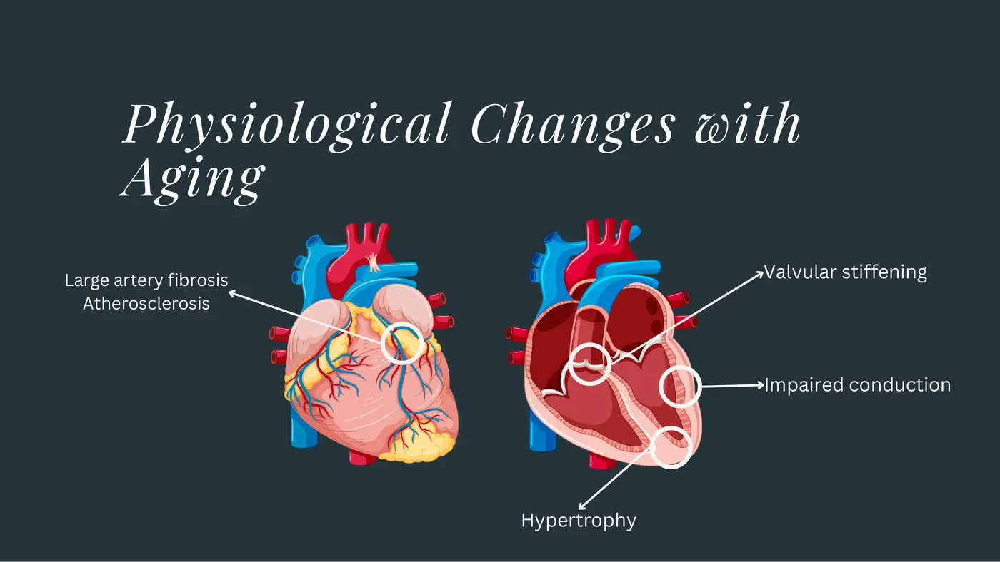
| Aging change | Consequence |
|---|---|
| Large-artery fibrosis → stiffness | Blood pressure rises |
| ↓Left-ventricular compliance + ventricular hypertrophy | Less filling space → ↓cardiac output |
| Impaired conduction (SA → AV → Purkinje) | Impaired contractility |
| Valvular stiffening | Stenosis |
| Max heart rate declines | Lower exercise ceiling |
- Functional bottom line: higher BP, lower exercise tolerance, higher risk of hypertension and CHF. These are NORMAL aging changes — and they're exactly why aging adults need more aerobic exercise than most of them realize.
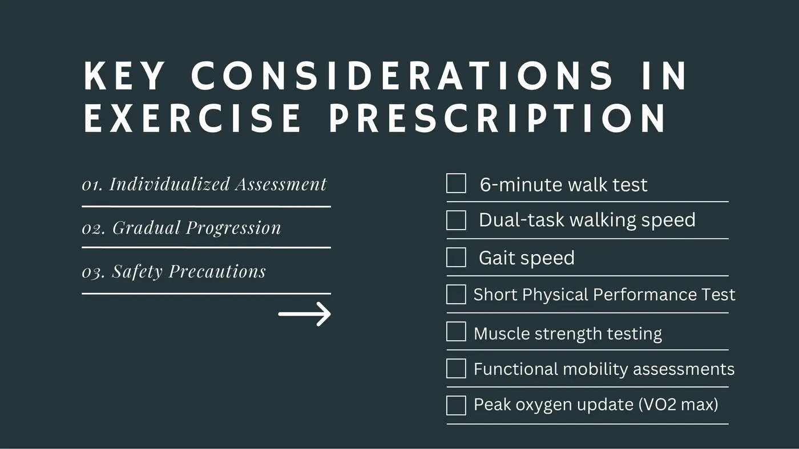
- PT prescription: aerobic work (walking, cycling) for endurance, strength training to hold muscle mass, flexibility/balance to cut fall risk. Assess individually, start moderate, progress gradually, monitor for adverse effects. Reference tests to know: 6-minute walk, gait speed, dual-task walking speed, Short Physical Performance Battery, strength testing, functional mobility, VO₂max — no lab in this course, but they return before and during Cardiopulm.
📚 Required reading — Topic 3.3
- Clinical Implications of Physiological Changes in the Aging Heart (required article)
Topic 3.3 — Quick-Reference Glossary
| Term | Definition |
|---|---|
| Arterial stiffness | Fibrosis of large arteries → the aging BP rise |
| Ventricular hypertrophy | Thicker walls, smaller filling volume, lower CO |
| Valvular stiffening | Age-related stenosis |
| 6MWT / SPPB / gait speed | Core aging-adult capacity measures |
| Aging triad | ↑BP, ↓exercise tolerance, ↑HTN + CHF risk |
SYNC SESSION
Team Quiz + Case Studies
The sync session runs the module's team-based quiz plus a five-case application activity (the case handout and the “Story Telling — Cardiac Physiology” worked example are both in this course's folders in this Drive). The cases preview exactly what the module wants you to connect:
| Case | What it tests |
|---|---|
| 1. 70-y/o, elevated BP, arterial stiffness | Aging changes → hypertension mechanisms |
| 2. S2 sound + diastolic dysfunction | Aortic/pulmonary valve closure; ventricular relaxation and filling |
| 3. 55-y/o smoker, calf pain at 10 min of walking, relieved by rest | PAD / intermittent claudication pathophysiology |
| 4. SV plateaus while HR keeps climbing | Afterload + ventricular filling time |
| 5. Reading a P wave on ECG | Atrial depolarization; arrhythmia screening logic |
✅ Module 3 Assessments
- Cardiovascular Individual Quiz — timed, no resources
- Cardiovascular Team Quiz — requires Zoom + webcam
- Harmonize “Muddy Points” — optional